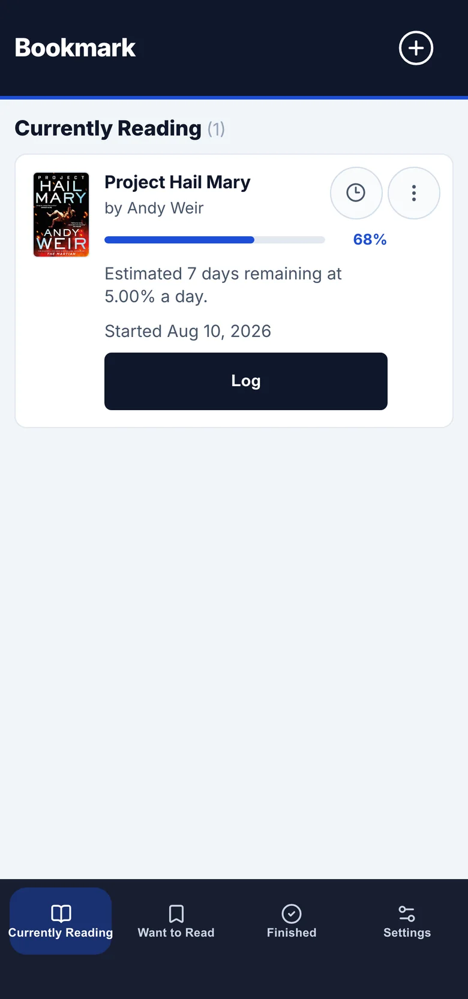
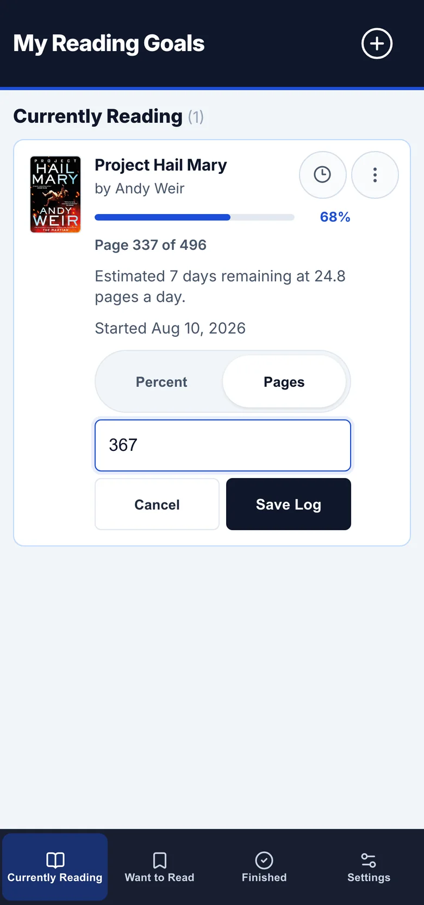
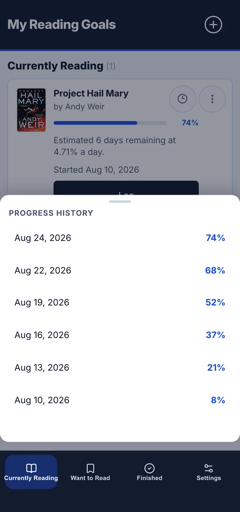
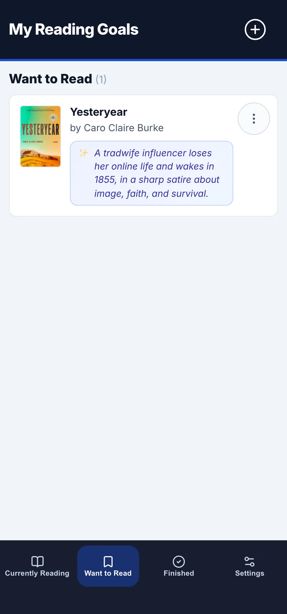
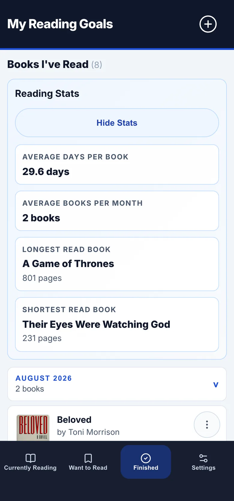
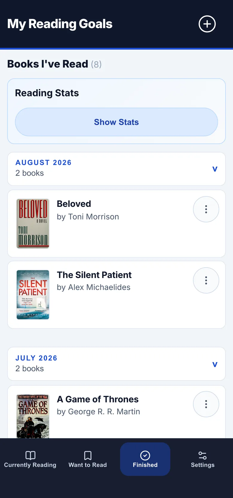
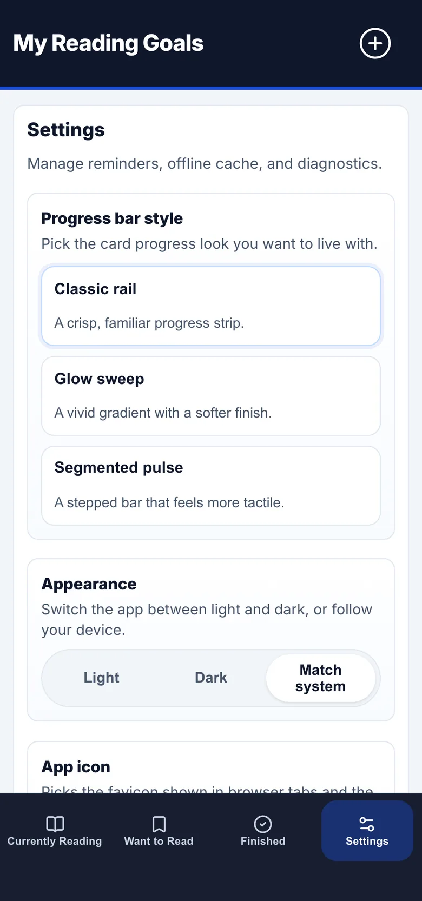

Track what you read
Your current book, cover, and daily pace.







Self-hosted reading tracker
Track your reading.
Deploy a private copy on Vercel. Use it free by default. Add AI only if you want it.